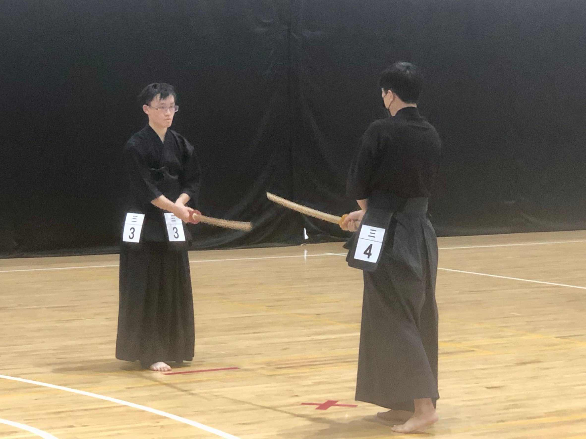
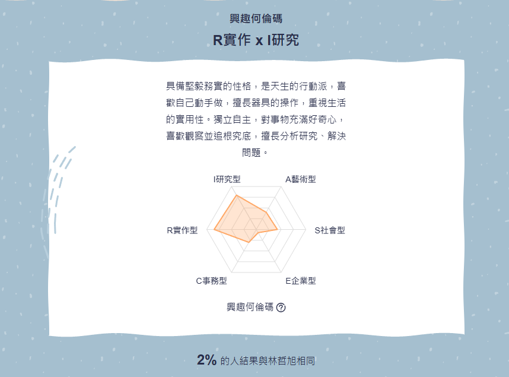

個人簡介
林哲旭
靜宜大學 資訊管理學系 二年級
致力於將嚴謹的程式邏輯與生活中的專注力結合。目前投入 Python 開發與 IoT 實作，享受從無到有構建技術方案的挑戰。
🎻
拉小提琴
追求細節與音準的極致，這份堅持反映在對程式碼品質的追求。

劍道訓練
鍛鍊壓力下的穩定心態，冷靜面對各種系統挑戰。
靜宜大學 資訊管理學系 二年級
致力於將嚴謹的程式邏輯與生活中的專注力結合。目前投入 Python 開發與 IoT 實作，享受從無到有構建技術方案的挑戰。
追求細節與音準的極致，這份堅持反映在對程式碼品質的追求。

鍛鍊壓力下的穩定心態，冷靜面對各種系統挑戰。
結合了 實務型 (R) 與 研究型 (I)。這代表我具備動手解決問題的衝勁，也有耐心進行邏輯推演與除錯。

UCAN 診斷結果顯示我的 「問題解決」達 PR 77，結合 「資訊科技興趣」PR 95。這是我選擇邁向軟體開發之路的最強驅動力。
管理資訊系統 (MIS) 是企業技術維運的核心。程式設計師負責透過 IT 手段解決經營問題並優化組織效率。
核心職責 撰寫高效原始碼並維修 ERP/CRM 核心系統。優化 SQL 數據存取效能並確保資料安全性。
核心職責 解決軟硬體故障。導入自動化監控系統追蹤負載，確保 IT 環境穩定運行。
核心職責 規劃數據備份、還原機制與加密防護，定期進行資安弱點掃描防範非法入侵。
核心職責 評估雲端服務導入。推動 RPA 自動化流程取代重複人力，提升整體競爭力。
【自傳：為何我適合這份工作？】
我選擇成為程式設計師，主因是我對程式開發擁有極濃厚的熱忱。我已具備 Python 與資料庫開發的基礎，曾獲比賽第二名的經驗更證明了我的開發實作能力。結合 RI 性格中對技術的鑽研，我能全神貫注於技術挑戰並產出具備實用價值的系統。
• 邏輯開發：撰寫高效、整潔原始碼。
• 效能優化：優化資料庫查詢與演算法。
• API 整合：串接後端服務，確保數據正確。
• 專業課程：修習網管工程與雲端運算。
• 證照考取：目標大三考取 CCNA 專業證照。
• 開源參與：參與 GitHub 專案累積實作經驗。
1. 技術深耕 (大三)：精進 Python Flask 與 SQL 優化。
2. 雲端部署 (大三下)：練習 Vercel 部署，熟悉軟體發佈流程。
3. 業界實務 (大四)：爭取技術企業實習，體驗大規模團隊協作。